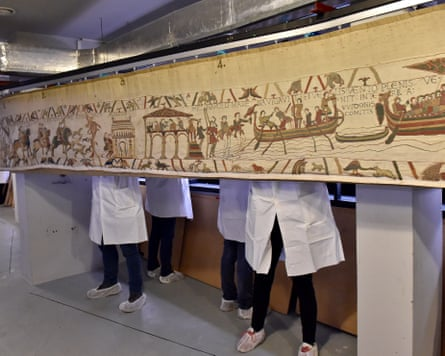
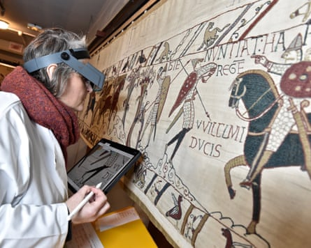
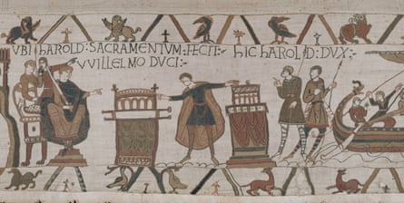

W hen, in 2018, Emmanuel Macron proposed the loan of the Bayeux tapestry to Britain, an army of conservationists and experts rose up to explain why the almost-1,000 year old treasure was too fragile to be moved.
Antoine Verney, the chief curator of the Bayeux Museum, said the tapestry that depicted the Norman conquest of England in 1066 was in such a bad state he “couldn’t conceive” of it going anywhere.
Even slightly moving the embroidered cloth for an inspection, he later said, was “hair raising” and required a team of 50 workers.His verdict on the president’s 2018 proposal was echoed by Frédérique Boura, a Normandy cultural official.
“The work is tired, worn and fragile,” she said. “It cannot be transported.”
Fast forward seven years and the mood music is very different. This week, Macron and Keir Starmer signed a landmark loan agreement during the French president’s three-day state visit to Britain. Under the deal, the almost 70-metre-long (230ft) and 50cm-high tapestry will travel to the British Museum next year, in exchange for the Anglo-Saxon treasures of the Sutton Hoo ship burial, the Lewis chessmen and other artefacts going to France.
Workers moving the tapestry in the Bayeux Museum.Photograph: Bayeaux Museum
The shift in tone may seem stark, but the Bayeux Museum said it had carried out tests – including a dress rehearsal with a model – that persuaded its experts that the tapestry could be sent to the UK without excessive damage.
“In 2018, we did not know enough about the physical condition of the work, which is why the loan had to wait even though we have always believed that it would be possible,” Loïc Jamin, Bayeux’s deputy mayor in charge of culture, said.
“All the expertise we have developed and shared with the [French] ministry of culture is now a major contribution to making the loan a reality.”
The tapestry, which depicts how William, Duke of Normandy, and his army trounced King Harold II and English forces in the Battle of Hastings, is displayed hanging vertically on rails behind glass in a temperature and humidity-controlled atmosphere.
It will be moved by extending the rails and placing it on a structure similar to a foldable screen that can then be closed and packed without putting excessive stress on the cloth and stitching. The tapestry will then be double-crated and taken by lorry and train through the Channel tunnel to London.
The Bayeux Museum is scheduled to close at the end of August for a €38m (£33m) renovation which would have necessitated the moving of the tapestry regardless of any deal with Britain.
“Of course there’s no such thing as zero risk but we are having to move it anyway as we’re working on the new museum where it will eventually be displayed,” a spokesperson said.
They added: “Our scientists have worked out a way to cause the least possible stress. The fact is we will be moving it anyway and to take it to the British Museum just means we’re moving it further. It’s emotional for the people of Bayeux, but the tapestry was never going to be on display here during the museum work.”
The museum in northern France has also designed a structure of tilted panels on which to display the tapestry when it reopens in 2027, easing the pressure on the cloth. It has suggested these could also be loaned to the British Museum for use in what is expected to be a blockbuster exhibition from September 2026 to July 2027.
While magnificent, the tapestry is showing its age: in 2020, textile conservationists inspected every centimetre and reportedly found almost 24,200 stains and 10,000 holes. The work is expected to undergo a complete renovation estimated to cost €2m after its return from the UK.
A technician inspecting the tapestry in 2020.Photograph: Bayeaux Museum
The spokesperson added: “Bayeux has always had strong links with the UK and we’re very happy the tapestry we have taken care of for almost 1,000 years is returning for a few months to where it was created at the end of the 11th century.
“It’s a momentous occasion both sides of the Channel, but it’s perfectly reasonable for us to loan the tapestry to the British Museum because of our shared heritage and history. It wouldn’t happen with any other country.”
Verney said the two museums had enjoyed a “close relationship” for more than a decade.
“We have already called on the considerable expertise of their conservation team, who have been members of our scientific committee since 2013, on the project for the future Bayeux Museum. This loan is an opportunity to promote the tapestry, and the sharing of resources will improve our knowledge of it, particularly in terms of understanding the context in which it was created,” he said.
“This partnership of historical and scientific expertise will also help to support and nurture the project for the new Bayeux Museum.”
The exact provenance of the tapestry is unknown. It was probably commissioned by William’s half-brother Bishop Odo of Bayeux in the 1070s to decorate the city’s cathedral and was almost certainly sewn by English women. It was moved to its own museum in 1983 and has been there ever since. It features 58 scenes created in four stitches and thread in 10 natural dye colours, including 623 humans, more than 700 animals, 37 buildings and 41 ships and other vessels, plus 93 or 94 male genitalia depending on which British expert is counting.
Harold touches relics as he swears fealty to William sitting on a throne.Photograph: Bayeaux Museum
The tapestry has only been moved three times since it came to Bayeux, where it now attracts about 400,000 visitors a year, a quarter of them British. The first time was in the winter of 1803-1804 when Napoleon Bonaparte feared an English invasion and ordered it to be transported to Paris. In the second world war, France’s German occupiers first transferred it by van to a repository then requisitioned it and moved it to the Louvre in Paris as allied troops advanced after D-day.
One person who has not changed their mind about the loan is Didier Rykner, the founder and the editor in chief of La Tribune de l’art and an outspoken defender of France’s heritage. He remains implacably opposed to the tapestry travelling to the UK and has described Macron’s decision as “catastrophic”.
Under the headline: “Why the Bayeux tapestry cannot (and must not) travel”, Rykner republished an article from 2018 citing experts saying this would damage it.
“President Macron has once again taken a catastrophic decision for our heritage, deciding alone, against the advice of conservationists and restorers who know the Bayeux tapestry,” he wrote.